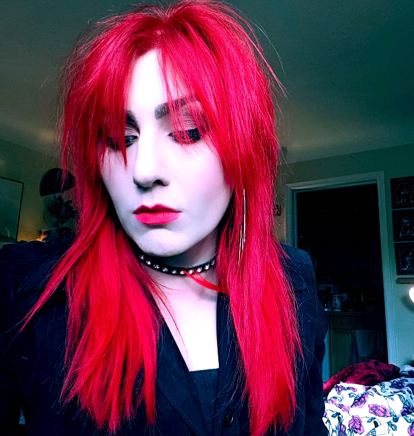

The Artist!
Hi there!
It's me!
Anyone else's mind go completely blank when writing your "About Me"? I can always begin by stating the obvious: I love art and music and horror. Absolutely obsessed with all things Halloween. Any day that I'm at home working on something, you'll most likely find me playing some sort of horror movie in the background...that or any episode of Supernatural.
I've been doing artwork for pretty much as long as I can remember, always the most intrigued by people as my main subjects. I started out primarily using graphite and charcoal, but started craving those bursts of obnoxious color and have been experimenting with a lot of acrylic and colored pencils. I'm fascinated by oil paint, but I'm not nearly patient enough for that.
I'm a night owl and a homebody. I have a family of squirrels that hang out in my yard. Spooky season is the best season and nothing can change my mind on that.
And I've officially run out of things to say about myself! Thanks for stopping by!